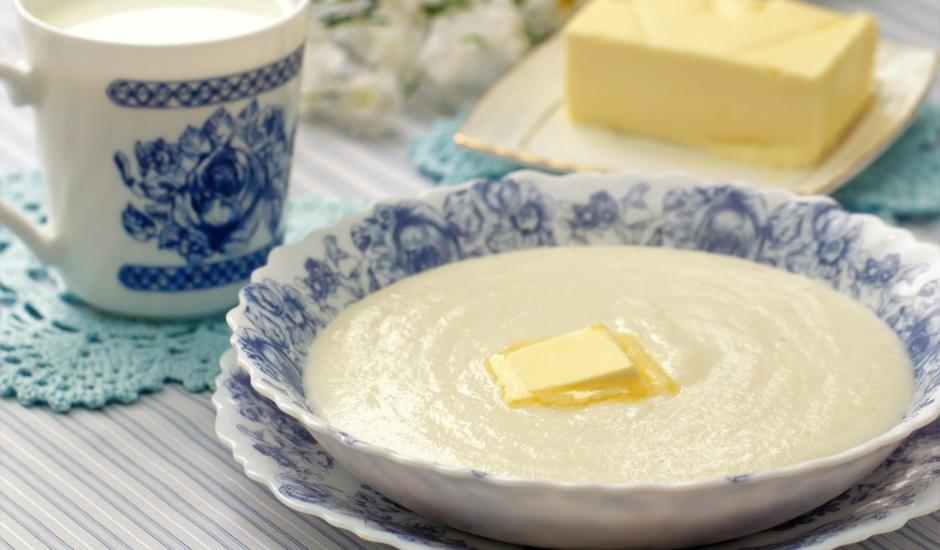

Home
Viegla mannas putra ar sviestu

Viegla mannas putra ar sviestu.
Sastāvdaļas:
- 2 glāze/s piena
- 1/2 glāze/s mannas
- 1 šķipsna/s sāls
- 100 g ūdens
- 1 ēd. k. cukura
- 15 g sviesta
Recepte:
- Ielej katliņā ūdeni. Kad sāk vārīties, pievieno pienu. Pieber cukuru un sāli, izmaisa.
- Kad piens uzvārijies, noņem no uguns un pakāpeniski pievieno manna putru nepārtraukti maisot.
- Kad viss iemaisīts, uzliekam atpakaļ uz uguns, turpinam maisīt. kad uzmet pāris burbuļus, ņemam nost no uguns. Gatavs!
- Atstāj, lai padziest (putra turpinās uzbriest). Servē ar sviestu vai ievārījumu.
Links uz oriģinālo receptes mājaslapu
Manna putra